Como é a instalação do git no Windows
Para instalar o Git no Windows é bem simples, igualmente a qualquer software disponível na internet.
1. Abra o site do Git, vá em downloads, e clique na opção Windows, ou clique no link abaixo para ir direto:
2. Faça o download do arquivo;
3. Execute o arquivo;
4. Passo a Passo:
Primeira tela: mostra a política de privacidade do software. Depois disso, clique em Next.
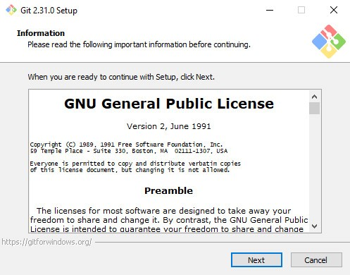Segunda tela: aqui você pode escolher onde deseja que o Git seja instalado. Depois disso, clique em Next.
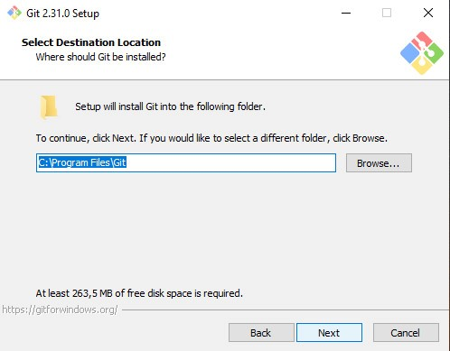
Terceira tela: Aqui você pode escolher algumas opções de uso a mais, ou remover outras que acha não ser necessário. Depois disso, clique em Next.
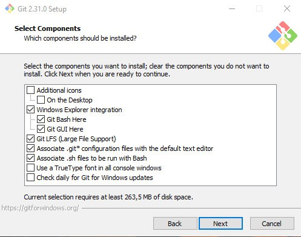
Quarta tela: Aqui você escolhe o nome que deseja que apareça no menu INICIAR quando for em busca do Software, mas, caso não queira esse atalho, é só marcar a opção abaixo que está escrito: “Don’t create a Start Menu Folder”. Depois disso, clique em Next.
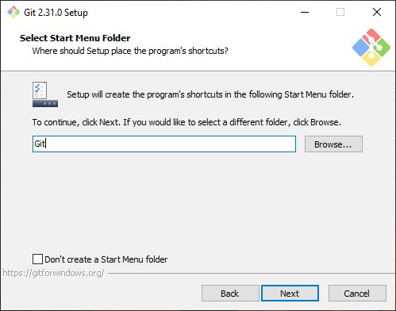
Quinta tela: Aqui você pode escolher o tipo de editor que deseja utilizar para dar os comandos ao GIT. Certamente algum vai ser útil para você, coma possibilidade de usar editores mais simples, como Notepad++ e visual studio code. Depois disso, clique em Next.
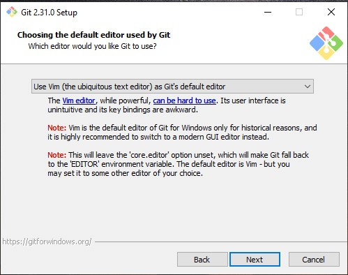
Sexta tela: Aqui você pode escolher o tipo de nomenclatura para o seu primeiro repositório:
Ex: “Repositório”.main, “Repositório”.master, “Repositório”.trunk, etc.
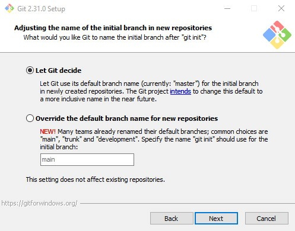
Sétima tela: Aqui você pode escolher os tipos de sistemas para executar diferentes tipos de comando Git de seu agrado. Depois disso, clique em Next.
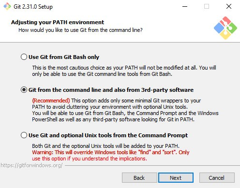
Oitava tela: Aqui você pode escolher o server que vai cuidar do transporte de suas informações pela internet, no caso a validação de seu arquivo. Depois disso, clique em Next.
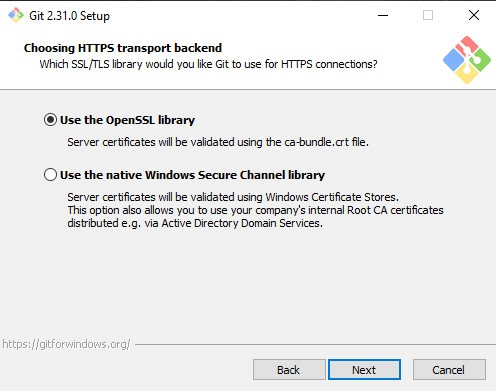
Nona tela: Nessa tela, você pode deixar ou não, o GIT fazer a conversão dos tipos de arquivos para a manipulação das informações.
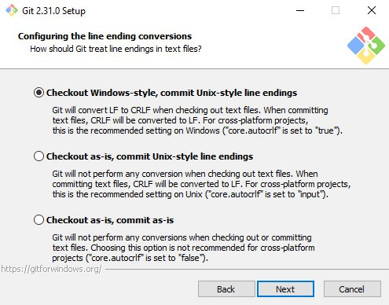
Décima tela: Aqui você pode definir o tipo de emulador que quer que o Git usem, pode ser o CMD, ou o MinTTY.
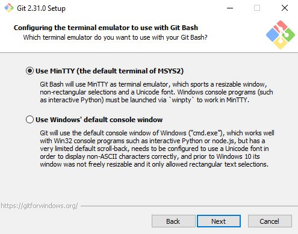
Décima primeira tela: Aqui você pode escolher o tipo de padrão por trás do GIT Pull.
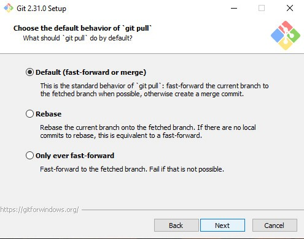
Décima segunda tela: Aqui você define o gerenciador de credenciais que você quer que opere no GIT.
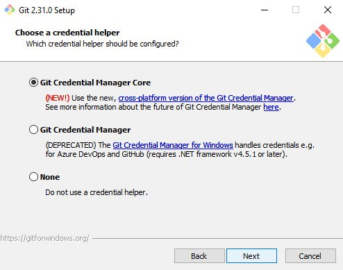
Décima terceira tela: Aqui você pode escolher um formato de cache rápido no GIT para assim, melhorar seu desempenho em alguns casos.
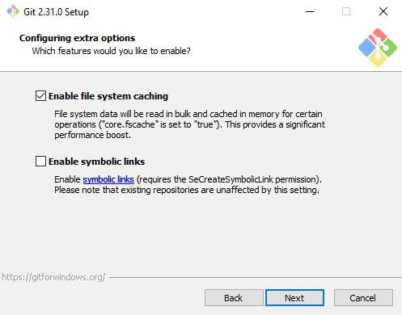
Décima quarta tela: Aqui você pode habilitar um suporte experimental disponibilizado pelo GIT de novos comandos e ferramentas que estão sendo desenvolvidas para o GIT.
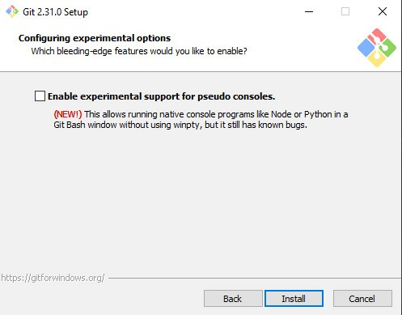
Décima quinta tela: agora é só aguardar o download, e pronto, o GIT está instalado em sua máquina.
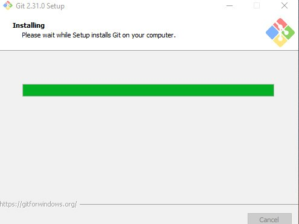
Agora se você não vê necessidade em nenhum dos itens acima e confia nas indicações do Git, é aquele velho jeito comum entre os programadores, “next, next, finish”.
Fonte de Fotos do tutorial: Autor Próprio, legendas também, nada foi copiado, link abaixo foi encontrado depois de todo o processo estar concluído.
Como configurar o git
Após os comandos citados bem acima de como criar uma conta, vem alguns comandos de como fazer algumas configurações básicas no GIT usando também o “git config”. Com esse comando você pode alterar seu git, e até os repositórios que serão vistos pelos outros usuários.
/etc/gitconfig: vale para todos os usuários e repositórios utilizando o sistema.
~/gitconfig ou ~/.config/git/config: com isso você altera as configurações apenas do seu Git, não interfere em mais nada além disso.
Config no diretório git (git/config) de qualquer repositório, essa configuração só altera esse repositório em específico.
O git em partes de comandos específicos para certas partes funciona bem parecido com um CSS da vida, caso reescreva um comando diferente, ele se sobrepõe sobre o outro que foi passado antes.
Você pode alterar o seu editor do texto por comandos também, com o código a seguir:
$ git config - -global core.editor “nome do editor”
Caso não faça isso, o editor que irá aparecer será o Vim, semelhante ao CMD, a não ser que já tenha sido alterado na instalação do git.
Obs: “ - -global” usando a opção global, você só precisará fazer esse comando uma vez na vida, se não, terá que repetir toda vez que for fazer comandos digitados.
E por fim, outro comando básico é o : “ git config - -list”, esse comando mostra todas as suas informações inseridas e suas configurações realizadas no git, semelhante a imagem abaixo: